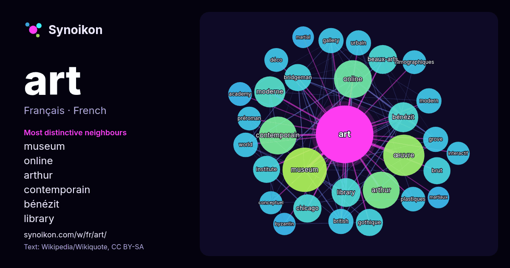

Français · mot populaire
art
“art” · Les mots trouvés autour de lui dans 1398 occurrences issues de Wikipédia, Wikiquote.

Voisins les plus spécifiques
- museum 52×
- online 43×
- arthur 35×
- contemporain 34×
- bénézit 28×
- library 25×
- bridgeman 23×
- brut 22×
- institute 21×
- beaux-arts 20×
- gothique 20×
- moderne 20×
- grove 20×
- chicago 19×
- gallery 19×
- œuvre 18×
- préroman 18×
- filmographiques 18×
- british 18×
- déco 18×
× = combien de fois plus souvent que dans le texte général de Wikipédia.
Voisins les plus fréquents
- museum 59
- œuvre 51
- contemporain 43
- online 43
- arthur 41
- moderne 29
- musée 28
- bénézit 27
- mouvement 27
- beaux-arts 25
- library 25
- chicago 24
- français 24
- bridgeman 22
- brut 22
- forme 22
- gothique 22
- institute 22
- roman 20
- british 19
En contexte
- ART. Cet article concerne le concept philosophique. Pour les différents arts, voir Arts. Pour l’article ayant un titre homophone, voir Arrhes. L'art est Wikipedia snippets · Art
- titres homophones, voir Arts (homonymie). Cette page d’homonymie répertorie les différents sujets et articles portant le même nom. ART peut faire référence Wikipedia snippets · ART
- contemporain Art contemporain japonais Art moderne Art conceptuel Art officiel Arts plastiques Art urbain Art social Art digital Art phygital Centre d'art contemporain Wikipedia snippets · Art contemporain
- Jugendstil ou Art nouveau en Allemagne, Sezessionstil en Autriche, Art nouveau ou Nieuwe Kunst aux Pays-Bas, Art nouveau ou Stile Liberty en Italie, Art nouveau Wikipedia snippets · Art nouveau
- Pour le concept philosophique, voir Art. Pour les pages d'homonymes voir ART et, voir Arts (homonymie). Les arts représentent une forme de l'expression Wikipedia snippets · Arts
- Pour les articles homonymes, voir Arts décoratifs (homonymie). Ne doit pas être confondu avec Art nouveau. Les informations figurant dans cet article Wikipedia snippets · Art déco
- Pour les articles homonymes, voir Art. « Art » est une pièce de théâtre de Yasmina Reza, créée en 1994. Trois amis, Marc, Serge et Yvan, voient leur amitié Wikipedia snippets · « Art »
- classification des arts est toute forme de caractérisation et structuration des types d'art compris dans un système des Beaux-Arts dans l'histoire et Wikipedia snippets · Classification des arts
Autres mots
- automne
- carte
- chanson
- chat
- chemin
- cheval
- chien
- climat
- cloche
- cœur
- dieu
- désert
- eau
- famille
- forêt
- histoire
- hiver
- horloge
- jardin
- langue
- miel
- miroir
- monnaie
- montagne
- mort
- mère
- nature
- nourriture
- ombre
- pain
- pluie
- pont
- pouvoir
- printemps
- santé
- science
- sel
- silence
- temps
- tempête
- thé
- train
- travail
- trésor
- vie
- ville
- vérité
- étoile
- île
Précalculé le 2026-10-09 avec les paramètres par défaut (±5 mots, corpus moyen). La carte interactive peut l’actualiser avec des données en direct.
Interface traduite automatiquement ; corrections bienvenues.